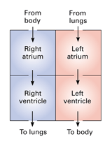
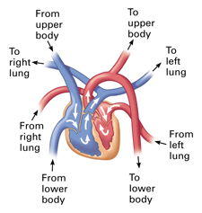

Objectives
- State how the terms evidence, hypothesis, and theory are
used in science.
- Explain how scientific models are useful in understanding
ideas.
- Describe the importance of communication in science.
- Distinguish between the roles of science and technology
in society.
Key Terms
What you learn this year about biology and the process of science will help you evaluate many issues that affect your personal life, such as health issues. Your understanding of science will also help
you make decisions
that affect your community and even the entire nation. In
just a few years
you may be voting in local, state, and national elections.
Democracy works
best when voters understand the issues. And science now
impacts many issues
that voters face. This section explores some of the things you need to
know.
Evidence in Science
Unconfirmed observations filling supermarket tabloids would
have you believe
that some of your classmates are aliens from space and that humans are
occasionally born with the heads of dogs. Most people,
especially if they
understand science, do not find the eyewitness accounts and
computer-rigged
photos to be convincing evidence. But judgments are harder
when you read,
for example, a magazine ad for a food supplement. You might
find testimonials
from enthusiastic users, graphs, quotes from "experts," and
so on. To avoid wasting money and endangering your health, you need to
know how to judge the quality of the evidence.
Evidence is a word that comes up as often in science as it does
in courtrooms. In general, evidence is the information upon
which inferences
are based. In science, evidence
consists of a collected body of data from observations and experiments.
And such evidence doesn't begin to convince scientists until
the observations
and experiments have been repeated multiple times with similar results.
The scientists who studied snake mimicry in the Carolinas
obtained similar
data when they repeated their experiments with different
species of coral
snakes and kingsnakes in Arizona. And you should be able to
obtain similar
data if you were to repeat the snake experiment. Such
attempts to repeat
independently the observations and experiments of others are common in
science. Repeatability is a hallmark of scientific evidence.
What Makes a Hypothesis Scientific?
Magazines and television programs have no shortage of hypotheses that
are claimed to be scientific. But how do you know which of
the hypotheses
make scientific sense? Look at whether the hypothesis can be
tested (and
if it has been). In science, the only hypotheses that count are those
that meet this standard of testability. You saw this process at work in
both the flashlight and snake examples. Each hypothesis led
to a prediction
that could be tested in an experiment. And notice that the experiments
could either support or contradict the hypotheses. The
flashlight experiment
could show that the hypothesis of dead batteries was
incorrect. And though
the experiments with artificial snakes supported the mimicry
hypothesis,
the data could have gone the other way. Suppose both groups of snakes
had been attacked equally. Such results would have cast doubt
on the hypothesis
that the mimic coloration helped discourage predators. In contrast, try
to think of a way to test the hypothesis that invisible "space aliens"
were fooling with your flashlight. How could you show that such an idea
is false? A scientific hypothesis must be falsifiable—that is, there must be some observation or experiment that
could reveal
if such a hypothesis is false.
Scientists test a hypothesis many times and in different
ways. Even hypotheses
that stand up to repeated testing may later be revised or
even rejected.
One way such change occurs is when new research tools make new kinds of
observations and experiments possible. A few decades ago, for example,
most biologists accepted the hypothesis that fungi are closely related
to plants. The evidence included some similarities in structure, growth
pattern, and reproduction. That hypothesis has been challenged by new
methods that make it possible to analyze and compare the DNA of diverse
organisms.
The Limitations of Science
Science is powerful, but limited in the kinds of questions it can help
answer. Science requires repeatable observations and testable
hypotheses.
These standards restrict science to a search for natural causes
for natural phenomena. For example, science can neither prove
nor disprove
that unobservable or supernatural forces cause storms,
rainbows, illnesses,
or cures of disease. Supernatural explanations of natural
events are simply
outside the bounds of science. There is no way to show that
such hypotheses
are false.
Although science is "a way of knowing," keep in mind that it
is not the
only way. Not everything you "know" is based on
science. For example,
you know what kind of music you like and what your
favorite color
is. These personal tastes are not the results of a careful testing of
hypotheses. And you know right from wrong. This
concept is an ethical
value, not a scientific fact. Each human mind develops a
unique database
of knowledge of many different kinds. Science-based knowledge
is the type
built from confirmed observations and testable hypotheses.
Theories in Science
Many people think of science mainly as a collection of facts.
But collecting
facts is not what really defines science. A telephone book is
an impressive
catalog of factual information, yet it has little to do with science.
It is true that factual data provide the raw material for science. But
scientists are mostly interested in finding patterns in the
data and explaining
these patterns. What really advances science is some new
theory that ties
together a variety of facts that previously seemed unrelated.
People like
Isaac Newton, Charles Darwin, and Albert Einstein stand out
in the history
of science because their theories connected so many
observations and experimental
results.
How is a theory different from a hypothesis? In science, a
theory
is a well-tested explanation that makes sense of a great
variety of scientific
observations. It gives rise to many hypotheses that can be tested. This
definition contrasts with the everyday use of theory to mean a
speculation, as in "It's only a theory." Compared to a
hypothesis, a theory
is much broader in scope. This is a hypothesis:
"Mimicking poisonous
snakes is an adaptation that protects nonpoisonous snakes
from predators."
But this is a theory: "Adaptations such as mimicry
evolve by natural
selection." The theory of natural selection explains the evolution of
the many cases of mimicry, as well as a variety of other adaptations of
organisms to their environments.
Theories, such as the theory of natural selection, only become widely
accepted in science when they are supported by an extensive
body of evidence.
That evidence also provides a framework for further research
and predictions.
If new evidence that contradicts a theory is uncovered,
scientists first
verify the evidence many times. They then modify or discard the theory
accordingly.
Models
Have you ever drawn a simple map for a friend who needed directions to
your home? If so, you created a model. Models
are physical, mental, or mathematical representations of how
people understand
a process or an idea. Models can be very useful tools of
scientific thinking.
A model can take the form of a drawing, graph,
three-dimensional object,
computer program, or mathematical equation. Even a description in words
of how a natural process works is a model. The diagrams in Figure 2-20
are two different models that represent blood flow through
the human heart.
You can tell that the pictures are not images of a real heart. Models
are not exact replicas of something real. Rather, they are
useful because
they help people explain and evaluate ideas about the natural
world.
|  |
 |
Figure 2-20
Though neither of these diagrams looks realistic, both can help you
understand a key process in the body. The model on the left
simply shows the
path of blood flow into and out of the heart's four chambers. The
model on the right shows more detail about the connecting blood vessels.
(The models are "face-on" views, with the "right" and "left" labels
referring to the person's right and left sides.) Red
indicates blood that is rich in oxygen; blue represents oxygen-depleted
blood. |
Analogies are another type of model in science. An analogy
is a comparison
that shows a likeness between two things. For example, you
might say the
brain is like a computer. Analogies are valuable aids to
memory and creative
thinking because they usually compare something that you are
just starting
to understand with something that you know from everyday life.
Scientists judge the value of a model several ways. Does it
explain all
the observations related to it? Can predictions be made from the model?
Is it compatible with other, related models or ideas? For example, does
the description of blood flow in the diagram in Figure 2-20 match the
path blood actually follows in a working heart? Can this model be used
as a basis for designing a plan for an artifical heart? A
model that explains,
predicts, or matches new observations becomes increasingly
useful to scientists.
And, models that fail to meet these requirements don't last.
Communication in Science
Cartoons and movies sometimes portray scientists as loners working in
isolated laboratories. In reality, science is an intensely
social activity.
Most scientists work in teams, and most successful scientists are good
communicators. Researchers share their findings by publishing articles
in journals and by giving talks or presenting posters at meetings. The
Internet has become an increasingly important way for
scientists to exchange
ideas and data with colleagues all over the world. It also allows the
general public easy access to the work of many scientists. As
you conduct
biological research this year, you'll have a chance to share
some of your
ideas and data via the Biology: Exploring Life Web site.
Both cooperation and competition characterize the scientific culture.
Scientists working in the same research field often check one another's
claims by attempting to repeat experiments. Sometimes, science provides
all the excitement of a race. Most scientists enjoy the
challenge to "get
there first" with an important discovery or key experiment.
Science, Technology, and Society
The strong link between science and society becomes even clearer when
you add technology to the picture. Science and technology are related,
but their goals and methods are different. The goal of
science is to understand
nature through careful observation and testing of hypotheses. The goal
of technology
is to apply scientific understanding for some specific
purpose. Scientists—such
as biologists—speak of "discoveries." On the other hand,
technologists—such
as engineers—speak of "inventions."
Fifty years ago, scientists James Watson and Francis Crick discovered
the structure of DNA, the chemical material of genes. Their discovery
eventually led to a variety of DNA technologies. An example
is the genetic
engineering that pharmaceutical companies are now using to
produce a new
generation of medicines. Perhaps Watson and Crick wondered if
their discovery
would someday have important applications, but they probably
did not predict
exactly what those applications would be.
The direction technology takes depends less on the curiosity
that drives
basic science than it does on the current needs and wants of humans and
on the social environment of the times. An example of how society makes
choices about technology is the issue of whether people
should be tested
to see if they have genes for heritable diseases. Should such tests be
voluntary or required? Should insurance companies or
employers have access
to the information? How should people who learn that they carry genetic
diseases make decisions about whether to have children? Who
should decide
the answers to these questions? Such hotly debated issues
about technology
often are not about "can it be done," but "should it be
done." Such issues make front-page news. Technology and the science on
which it depends cannot be separated from the society in
which they occur.
More than ever, good citizens must make an effort to gain a
basic understanding
of science and technology. Whether you are making lifestyle
choices that
affect your health or democratic choices that affect the
future of society,
your understanding of biology and the process of science should serve
you well.
Concept Check 2.3
1. How is a theory different from a hypothesis?
2. What features are used to evaluate a scientific model?
3. How is communication an important part of science?
4. What is technology?
5. A magazine ad lists 10 celebrities who claim that
the advertised
product improved their memory. Why doesn't this example
qualify as scientific
evidence?
Developing and Practicing Skills
What's your favorite after-school activity? Whether it's
playing a sport or a musical instrument, acting in plays, or taking
photographs, you rely
on certain skills that help you to succeed. Similarly, throughout your
study of biology and other sciences, you are developing a set of skills
to interpret information and to design and carry out
scientific investigations.
The Skills Activities described on these two pages will help you learn
and improve your science skills. You can find all of these activities
on the Biology: Exploring Life Web site.
Making Measurements
A common system of units enables all scientists around the
world to speak
the same "language" of data. Learn this language and develop
good measuring
skills with tutorials on conversion tables, practice
problems, and common
equivalents. Then test your mastery with a matching exercise.
Conducting a Scientific
Investigation
Through virtual experiments, practice making observations and
inferences,
developing hypotheses, designing experiments, collecting and
interpreting
data, drawing conclusions, and communicating your results.
Using a Microscope
Get to know the parts of a microscope and the proper way to use one in
your laboratory. Then compare images from different types of
microscopes
and at different magnifications.
Lab Safety Primer
Learn about the safety precautions in your Biology:
Exploring Life
Laboratory Manual, discover reliable ways to avoid hazards in the lab,
and review the proper disposal of laboratory materials. Check
your safety
IQ by playing "What's Wrong With This Lab?"
Math Review
What does math have to do with biology? You'll find out as you sharpen
your skills with tutorials and practice problems on
fractions, percents,
decimals, exponents, probability, significant figures, and
common formulas.
Graphing
You will encounter many graphs in your study of biology.
Practice reading,
interpreting, and making your own line, bar, and circle graphs.
Organizing Information
Learning how to create graphic organizers such as concept
maps, flowcharts,
and tables can help you in all your studies. Explore examples and try
your hand at building different organizers.
Studying for Standardized Tests
Taking standardized tests can be very stressful. Preparing
well can ease
your anxiety and help you succeed. Go online to review test
question types
and strategies for selecting correct answers and eliminating incorrect
answers. Then practice your test-taking techniques on sample
tests designed
to help you refine your skills.
Reading a Scientific Article
Should you believe everything you read? Get some experience reading and
interpreting a scientific article. Sifting through the facts,
posing questions,
and considering potential bias will help you understand and critically
evaluate any scientific article.
Critical Thinking for Web
Research
The Internet is like the biggest library in the
world—except in this library, the books are scattered all over the floor! Find out
how to select
research topics and locate appropriate Web sites for
information so that
you can use the Internet wisely and efficiently. Once you know how to
ask the right questions, use search engines, and assess
whether Web sites
are credible you will be able to fully harness the research
power of the
Web.